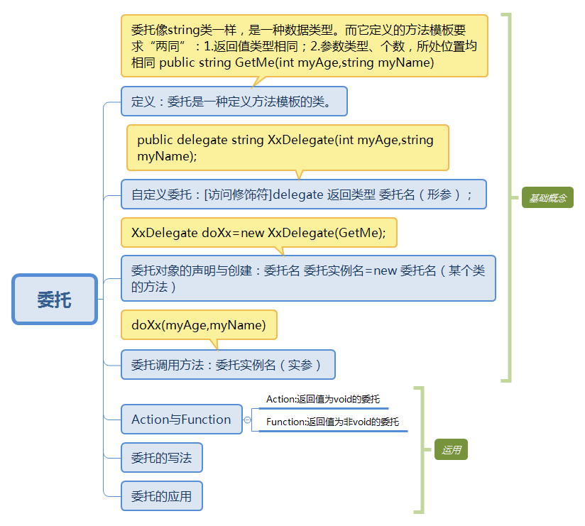

通过以下思维导图，学习委托的基本概念，后面着重讲解委托的运用，希望通过最简单的方式收获更多的知识。

1、委托 委托名=new 委托（会调用的方法名); 委托名（参数）;
2、委托 委托名 =会调用的方法名; 委托名（参数）；
3、匿名方法：委托 委托名=delegate(参数）{会调用的方法体};委托名（参数）；
4、拉姆达表达式：委托 委托名=（（参数1，。。参数n）=>{会调用的方法体}）；委托名（参数）；
5、用Action<T>和Func<T>
Action<参数1, 参数2,> 委托名= ((参数1，参数2) => {不带返回值的方法体 });委托名（参数1，参数2）；
Func<参数1, 参数2, 返回值> 委托名= ((参数1，参数2) => {带返回值的方法体 });返回值=委托名（参数1，参数2）；
示例：
public delegate int Call(int num1, int num2);
class SimpleMath
{
// 乘法方法
public static int Multiply(int num1, int num2)
{
return num1 * num2;
}
// 除法方法
public int Divide(int num1, int num2)
{
return num1 / num2;
}
}
class Test
{
static void Main(string[] args)
{
//--------------------第一种写法------------------------//
Call objCall = new Call(SimpleMath.Multiply);
Call objCall1 = new Call(new SimpleMath().Divide);
//--------------------第二种写法------------------------//
Call objCall = SimpleMath.Multiply;
Call objCall1 = new SimpleMath().Divide;
//--------------------第三种写法------------------------//
Call objCall = delegate(int a, int b)
{
return a * b;
};
Call objCall1 = delegate(int a, int b)
{
return a / b;
};
//--------------------第四种写法------------------------//
Call objCall =((int a,int b)=> { return a*b;});
Call objCall1 = ((int a, int b) => { return a / b; });
//--------------------第五种写法------------------------//
Func<int, int, int> objCall = ((a, b) => { return a * b; });
Func<int, int, int> objCall1 = ((a, b) => { return a / b; });
Action<int, int> ob = ((a, b) => { Console.WriteLine(a * b); });
ob(5, 3);
//----------------------------------------------------//
int result = objCall(5, 3);
int result1 = objCall1(5, 3);
System.Console.WriteLine("结果1为 {0},结果2为{1}", result,result1);
Console.ReadKey();
}
}
1.将方法当作参数实例化委托对象；
2.将方法的参数传递给委托对象，以实现实际的方法调用。
1.模板方法：
如以下定义类CalculateFactory，用于定义各种计算方法，然后通过Calculate方法暴露出来给外界使用，而Calculate方法通过传入委托对象new Calculate(x1.Add)来实现对Add方法的调用。这是委托模板方法使用较简单的一种形式，它还可以有很多变种。
下面这段程序不用委托完全可以实现同样的逻辑，为什么要“故弄玄虚”呢？因为示例是为了说明委托作为模板方法的用法，故而用了最简单的一种，实际运用过程中，通常与设计模式相结合，以实现代码的高复用低耦合。进一步延伸，实际设计模式中也较少用委托，而用接口、抽象类来实现“模板方法”的功能，具体要怎么用是看个人习惯和便捷程度。委托用的最多的场景是下面要介绍的回调方法。
class Program
{
static void Main(string[] args)
{
CalculateFactory x1 = new CalculateFactory();
CalculateFactory x2 = new CalculateFactory();
x1.Calculate(10, 9, new Calculate(x1.Add));
x2.Calculate(10, 9, new Calculate(x2.Reduce));
Console.ReadKey();
}
}
public delegate void Calculate(int a, int b);
public class CalculateFactory
{
public void Calculate(int a, int b, Calculate calculateDelegae)
{
calculateDelegae(a, b);
}
public void Add(int a, int b)
{
Console.WriteLine(string.Format("This is a+b={0}", a + b));
}
public void Reduce(int a, int b)
{
Console.WriteLine(string.Format("This is a-b={0}", a - b));
}
}
2.回调方法：
回调方法与模板方法并不是并列的两种类型，其本质都是一样的，即将方法当成参数传递并调用，是通过应用场景来分类的。主调方法（调用回调方法的方法体）在满足某种条件或完成某种逻辑后去调用的方法，称为回调方法。将上面示例改造成含有回调方法的程序。
示例：这里既用到了模板方法，也用到了回调方法。示例代码来源于刘铁猛大师的示例，在此表示感谢。
class Program
{
static void Main(string[] args)
{
ProductFactory productFactory = new ProductFactory();
WrapFactory wrapFactory = new WrapFactory();
Func<Product> func1 = new Func<Product>(productFactory.MakePizza);
Func<Product> func2 = new Func<Product>(productFactory.MakeToyCar);
Logger logger = new Logger();
Action<Product> log = new Action<Product>(logger.Log); //Log的委托;
Box box1 = wrapFactory.WrapProduct(func1, log);
Box box2 = wrapFactory.WrapProduct(func2, log);
Console.WriteLine(box1.Product.Name);
}
class Product //产品类
{
public string Name { get; set; }
public double Price { get; set; }
}
class Box //盒子类
{
public Product Product { get; set; }
}
class Logger
{
public void Log(Product product)
{
Console.WriteLine(product.Price);
}
}
class WrapFactory //包装工厂
{
public Box WrapProduct(Func<Product> getProduct, Action<Product> logCallback)
{
Box box = new Box();
Product product = getProduct.Invoke();//此处使用的是间接的同步调用，如果使用间接异步调用用BeginInvoke();
if (product.Price > 50) //如果产品价格大于50，就执行回调方法;
{
logCallback(product);
}
box.Product = product;
return box;
}
}
class ProductFactory //产品工厂
{
public Product MakePizza()
{
Product product = new Product();
product.Name = "Pizza";
product.Price = 30;
return product;
}
public Product MakeToyCar()
{
Product product = new Product();
product.Name = "ToyCar";
product.Price = 100;
return product;
}
}
}
委托基础内容基本就是这些，回调方法在实际使用中也是最多的，上面回调方法的示例是有实用价值的，需要好好体会。委托还有多播委托等进阶应用，在此不作介绍，但需要了解其概念，以便碰到相应场景时翻翻资料能找到解决方案。